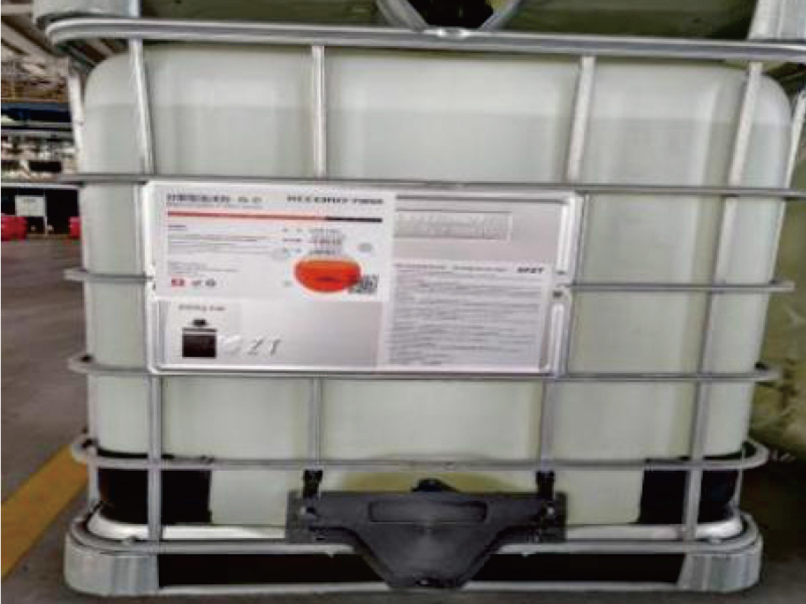

Die IS-Schaumzusatzserie wurde speziell für die EPB-TBM-Bodenverbesserung entwickelt. Schaumlösung wird über spezielle Ausrüstung mit Druckluft gemischt und Hochexpansionsschaum wird vor dem Schneidrad und in der Aushubkammer injiziert, um die Plastizität und Pumpfähigkeit des Ausbruchmaterials zu verbessern, Schneidradmoment und Verschleiß zu reduzieren und die Ortsbruststabilität zu gewährleisten.
Drei Formulierungen sind für unterschiedliche geologische Bedingungen optimiert: CTR-ISF-C für Standard-Sand- und Mischböden; CTR-ISF-D für Böden mit hohem Feinstanteil, mit höherem Feststoffgehalt; CTR-ISF-P enthält polymerverstärkte Additive für kohäsive und Mischböden und verbessert Schaumstabilität und Bodenumschließung. Die gesamte Serie ist biologisch abbaubar (>80% in 28 Tagen) und kann schnell und sicher entsorgt werden.
| Eigenschaft | CTR-ISF-C | CTR-ISF-D | CTR-ISF-P |
|---|---|---|---|
| Aussehen | Farblos bis hellgelb | Hellgelb | Hellgelb bis milchweiß |
| Dichte (g/cm³) | 1,01–1,03 | 1,02–1,05 | 1,01–1,03 |
| Feststoffgehalt (%) | 13,5–15,1 | 19,4–21,4 | 13,5–15,1 |
| pH | 7,0–9,0 | 7,0–9,0 | 7,0–9,0 |
| Mischverhältnis (%) | 1,5–5 | Kontakt anfragen | Kontakt anfragen |
| Schaumexpansion | 8–25× | Kontakt anfragen | Kontakt anfragen |
| Biologische Abbaubarkeit | >80% (28 Tage) | — | — |
| Polymeradditiv | Nein | Nein | Ja |
| Hauptanwendungsgeologie | Sand, Kies, Mischboden | Dispersive Tonböden | Kohäsive, Mischböden |
| Verpackung | 200-kg-Fass / 1000-kg-IBC | 1000-kg-IBC | 1000-kg-IBC |
Spezifische Parameter variieren je nach Geologiebedingungen, TBM-Konfiguration und Bodencharakteristika. Das CENTOR-Technikerteam kann gezielte Parameterempfehlungen auf Basis Ihres Bodentyps, Wassergehalts und der EPB-Ausrüstungsspezifikation geben.
CTR-ISF-C-Konzentrat ist nach GHS als Gefahrstoff eingestuft und muss ordnungsgemäß gehandhabt werden. Zur Sicherheitseinstufung von CTR-ISF-D und CTR-ISF-P bitte die jeweiligen Sicherheitsdatenblätter (SDB) einholen. Die folgenden Informationen dienen nur als Referenz — vollständiges SDB vor der Handhabung anfordern und lesen.
Tonverdicktes pumpbares Dichtfett für Hauptlager-Lippendichtsysteme, biologisch abbaubar und selbstverlöschend.
Details ansehen →Wirtschaftliches pumpbares Antriebsdichtfett, 35 bar Wasserbeständigkeit, flammhemmend, hervorragende Auswaschbeständigkeit.
Details ansehen →Umweltfreundliches pumpbares Hauptlager-Lippendichtfett, biologisch abbaubar, keinerlei Beeinträchtigung von Boden und Grundwasser.
Details ansehen →Unser Technikerteam empfiehlt die geeignetste Schaumzusatzformulierung und Einsatzparameter auf Basis Ihres Geologieberichts und Ihrer EPB-Ausrüstungsspezifikation.